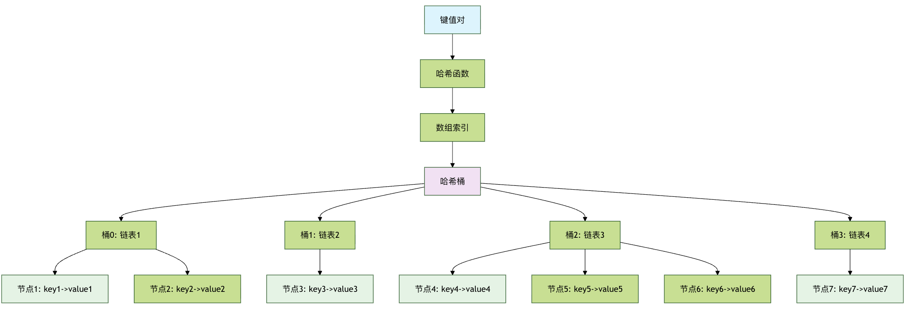
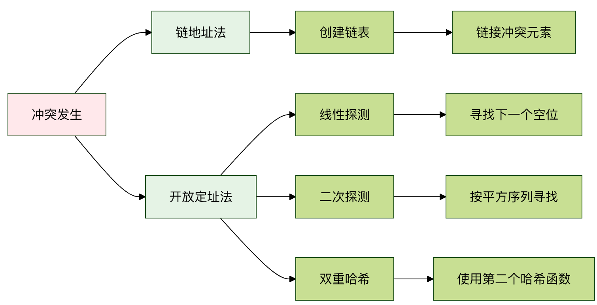

哈希表
哈希表（Hash Table），也叫散列表，是一种极其高效的数据结构。
哈希表能在平均情况下，以接近O(1)的时间复杂度进行数据的插入、删除和查找，这比数组的遍历（O(n)）和二叉搜索树的搜索（O(log n)）要快得多。
| 操作 | 数组/链表 | 哈希表 |
|---|---|---|
| 查找 | O(n) | O(1) |
| 插入 | O(n) | O(1) |
| 删除 | O(n) | O(1) |
| 空间效率 | 高 | 中等 |
哈希表就像是一个智能的储物柜系统：
- 传统储物柜：你需要记住每个物品放在哪个柜子里（线性查找）
- 智能储物柜：你告诉管理员物品名称，他直接告诉你柜子编号（哈希查找）
核心思想：
通过哈希函数将键（Key）转换为数组索引，实现快速访问。
生活中的案例：
- 字典查词：根据单词首字母快速定位到页面
- 电话簿：按姓氏拼音排序，快速找到联系人
- 图书馆索书号：根据分类号直接找到书架位置
想象一下，你有一个巨大的图书馆，里面有成千上万本书。
如果你想找一本特定的书，比如《哈利·波特》，你会怎么做？最笨的办法是从第一个书架的第一本书开始，一本一本地找，直到找到为止，这可能需要几个小时甚至几天！
聪明的图书管理员会怎么做呢？他们会使用一个索引系统：根据书名或作者名的某种规则（比如首字母），快速定位到书所在的大致区域，然后只需在那个小区域里寻找即可。这个索引系统的思想，就是哈希表的核心。
基本概念
什么是哈希表？
哈希表是一种通过键（Key）来直接访问值（Value）的数据结构，它利用一个叫做哈希函数的魔法公式，把任意大小的键（比如一个字符串、一个数字或一个对象）转换成一个固定大小的数字，这个数字被称为哈希值或哈希码。然后，用这个哈希值作为数组的索引，将值存储在这个索引对应的数组位置上。
这个过程就像给每个键分配一个唯一的座位号（哈希值），然后告诉它：你的数据就放在这个号码的座位上。当你想找这个数据时，只需要用同样的规则再算一次座位号，就能直接走过去拿到它，而不用一个个座位去问。
核心组件
一个哈希表主要由以下三个核心部分组成：
- 键（Key）： 你要存储和查找数据时使用的标识符。比如，在电话簿中，人名就是键。
- 值（Value）： 与键相关联的实际数据。在电话簿中，电话号码就是值。
- 哈希函数（Hash Function）： 将键映射到数组索引的数学函数。它是哈希表的心脏。
工作原理图解
让我们用一个简单的例子来说明。假设我们要创建一个电话簿，将人名映射到电话号码。

上图清晰地展示了哈希表的工作流程：无论是插入还是查找，都始于一个键，通过哈希函数计算出索引，然后直接对数组的该位置进行操作，从而实现了高速访问。
哈希函数设计
好的哈希函数特性
| 特性 | 描述 | 重要性 |
|---|---|---|
| 确定性 | 相同输入总是产生相同输出 | ⭐⭐⭐⭐⭐ |
| 均匀分布 | 输出均匀分布在哈希表范围内 | ⭐⭐⭐⭐⭐ |
| 高效计算 | 计算过程简单快速 | ⭐⭐⭐⭐ |
| 雪崩效应 | 输入微小变化导致输出巨大变化 | ⭐⭐⭐ |
常见哈希函数
| 类型 | 示例 | 适用场景 |
|---|---|---|
| 除法取余法 | hash = key % table_size |
整数键 |
| 乘法取整法 | hash = floor(key * A % 1 * table_size) |
浮点数键 |
| 数字分析法 | 分析数字的分布规律 | 特定模式数据 |
| 平方取中法 | hash = (key * key) // 10^(n/2) % table_size |
数字键 |
| 字符串哈希 | 逐字符处理 | 字符串键 |
冲突解决方法
链地址法（Separate Chaining）
| 特性 | 描述 | 时间复杂度 |
|---|---|---|
| 原理 | 每个哈希桶维护一个链表 | |
| 插入 | 在对应链表头部添加 | O(1) |
| 查找 | 在对应链表中搜索 | O(k)，k为链表长度 |
| 删除 | 在对应链表中删除 | O(k) |
| 空间开销 | 需要额外指针存储 | 较大 |
开放定址法（Open Addressing）
| 类型 | 探测序列 | 优点 | 缺点 |
|---|---|---|---|
| 线性探测 | h, h+1, h+2, ... |
简单易实现 | 容易聚集 |
| 二次探测 | h, h+1², h+2², ... |
减少聚集 | 可能无法探测所有位置 |
| 双重哈希 | h, h+hash2(key), h+2*hash2(key), ... |
分布均匀 | 计算复杂 |
哈希表结构图

冲突解决方法对比

深入理解哈希函数
哈希函数是哈希表高效的关键。一个好的哈希函数应该具备以下特点：
- 确定性： 相同的键必须始终产生相同的哈希值。
- 高效性： 计算速度要快。
- 均匀分布： 能将不同的键尽可能均匀地映射到整个数组空间，减少冲突。
一个简单的哈希函数示例
假设我们的键是字符串，数组长度是 10。一个简单的哈希函数可以是将字符串中每个字符的 ASCII 码相加，然后对数组长度取余数。
实例
"""
一个简单的字符串哈希函数。
:param key: 输入的键（字符串）
:param array_size: 哈希表数组的大小
:return: 计算得到的数组索引
"""
total = 0
for char in key:
# 将字符转换为其 ASCII 码值并累加
total += ord(char)
# 对数组大小取模，确保索引在数组范围内
return total % array_size
# 测试我们的哈希函数
keys_to_test = ["Alice", "Bob", "Charlie", "David"]
array_size = 10
print("简单哈希函数测试结果：")
for key in keys_to_test:
hash_index = simple_hash(key, array_size)
print(f" 键 '{key}' -> 哈希索引: {hash_index}")
输出结果：
简单哈希函数测试结果： 键 'Alice' -> 哈希索引: 0 键 'Bob' -> 哈希索引: 8 键 'Charlie' -> 哈希索引: 5 键 'David' -> 哈希索引: 3
这个函数很简单，但它可能不是最好的，因为不同的字符串可能产生相同的和（例如 ab 和 ba），从而导致哈希冲突。
哈希冲突与解决方法
哈希冲突是指两个或更多不同的键，经过哈希函数计算后，得到了相同的数组索引。就像电影院的两个观众被分配了同一个座位号，这显然是个问题。冲突是不可避免的，因为哈希值的范围（数组大小）通常是有限的，而可能的键是无限的。
解决冲突主要有两种经典方法：
方法一：链地址法
这是最常用的方法。它不把数据直接放在数组的每个位置，而是在每个数组位置存放一个链表（或其他数据结构，如红黑树）。当发生冲突时，新的键值对就被添加到这个位置的链表中。
过程描述：
计算键的哈希值，找到数组索引。
如果链表不为空（发生冲突），则遍历这个链表。
- 如果找到了相同的键，则更新其值（或根据需求处理）。
- 如果没找到相同的键，则将新的键值对添加到链表末尾。
实例
"""使用链地址法解决冲突的哈希表实现。"""
def __init__(self, size=10):
"""初始化哈希表。
:param size: 底层数组的初始大小
"""
self.size = size
# 创建一个大小为 `size` 的列表，每个元素初始化为一个空列表（代表链表）
self.table = [[] for _ in range(size)]
def _hash(self, key):
"""内部哈希函数。这里使用Python内置的hash函数并取模。"""
return hash(key) % self.size
def insert(self, key, value):
"""向哈希表中插入一个键值对。"""
index = self._hash(key)
bucket = self.table[index] # 获取该索引对应的"桶"（链表）
# 遍历桶，检查键是否已存在
for i, (k, v) in enumerate(bucket):
if k == key:
# 键已存在，更新值
bucket[i] = (key, value)
return
# 键不存在，添加到链表末尾
bucket.append((key, value))
def get(self, key):
"""根据键获取值。如果键不存在则返回None。"""
index = self._hash(key)
bucket = self.table[index]
for k, v in bucket:
if k == key:
return v
return None # 键不存在
def delete(self, key):
"""根据键删除键值对。"""
index = self._hash(key)
bucket = self.table[index]
for i, (k, v) in enumerate(bucket):
if k == key:
del bucket[i] # 从链表中删除该节点
return True # 删除成功
return False # 键不存在，删除失败
def display(self):
"""打印哈希表的所有内容。"""
for i, bucket in enumerate(self.table):
print(f"索引 {i}: {bucket}")
# 使用示例
print("\n--- 链地址法哈希表示例 ---")
phone_book = HashTableChaining(5)
phone_book.insert("Alice", "123-4567")
phone_book.insert("Bob", "987-6543")
phone_book.insert("Charlie", "555-1234")
# 假设"David"的哈希值与"Alice"冲突（为了演示）
phone_book.insert("David", "111-2222")
print("插入数据后的哈希表：")
phone_book.display()
print(f"\n查找 'Bob' 的电话: {phone_book.get('Bob')}")
print(f"查找不存在的 'Eve': {phone_book.get('Eve')}")
phone_book.delete("Charlie")
print("\n删除 'Charlie' 后的哈希表：")
phone_book.display()
输出结果：
--- 链地址法哈希表示例 ---
插入数据后的哈希表：
索引 0: [('David', '111-2222')]
索引 1: []
索引 2: [('Alice', '123-4567')]
索引 3: [('Charlie', '555-1234')]
索引 4: [('Bob', '987-6543')]
查找 'Bob' 的电话: 987-6543
查找不存在的 'Eve': None
删除 'Charlie' 后的哈希表：
索引 0: [('David', '111-2222')]
索引 1: []
索引 2: [('Alice', '123-4567')]
索引 3: []
索引 4: [('Bob', '987-6543')]
注意： 为了清晰演示冲突，示例中数组大小设为 5，并使用
hash(key)，实际冲突可能不明显。在simple_hash函数下，"Alice"和"David"可能产生相同索引，从而展示链地址法如何在一个索引下存储多个条目。
方法二：开放地址法
这种方法将所有元素都存储在数组本身中。当发生冲突时，它会按照某种探测序列（Probing Sequence）在数组中寻找下一个空闲的位置。
常见的探测方法：
- 线性探测： 如果位置
i被占，则尝试i+1,i+2,i+3... 直到找到空位。 - 二次探测： 如果位置
i被占，则尝试i+1^2,i+2^2,i+3^2...。 - 双重哈希： 使用第二个哈希函数来计算探测的步长。
这里我们实现一个简单的线性探测：
实例
"""使用线性探测开放地址法解决冲突的哈希表实现。"""
def __init__(self, size=10):
self.size = size
# 使用一个特殊标记 `None` 表示空位，使用一个标记（如 `'DELETED'`）表示已删除的位置
# 为了简化，这里只用 `None` 表示空位，查找时遇到 `None` 就停止
self.keys = [None] * size
self.values = [None] * size
def _hash(self, key):
return hash(key) % self.size
def insert(self, key, value):
index = self._hash(key)
original_index = index
# 线性探测寻找空位或相同的键
while self.keys[index] is not None:
if self.keys[index] == key:
# 键已存在，更新值
self.values[index] = value
return
index = (index + 1) % self.size # 移动到下一个位置（循环数组）
if index == original_index:
# 已经找了一圈，表满了（实际应用中应该扩容）
raise Exception("哈希表已满")
# 找到空位，插入
self.keys[index] = key
self.values[index] = value
def get(self, key):
index = self._hash(key)
original_index = index
while self.keys[index] is not None:
if self.keys[index] == key:
return self.values[index]
index = (index + 1) % self.size
if index == original_index:
break # 找了一圈没找到
return None
def display(self):
for i in range(self.size):
if self.keys[i] is not None:
print(f"索引 {i}: 键={self.keys[i]}, 值={self.values[i]}")
else:
print(f"索引 {i}: 空")
# 使用示例
print("\n--- 线性探测哈希表示例 ---")
ht_linear = HashTableLinearProbing(7) # 用小尺寸容易看到探测
ht_linear.insert("Apple", 10)
ht_linear.insert("Banana", 20)
ht_linear.insert("Cherry", 30)
# 假设"Date"和"Apple"哈希冲突
ht_linear.insert("Date", 40)
print("插入数据后的哈希表：")
ht_linear.display()
print(f"\n查找 'Banana': {ht_linear.get('Banana')}")
print(f"查找 'Date' (冲突后插入的): {ht_linear.get('Date')}")
输出结果：
--- 线性探测哈希表示例 --- 插入数据后的哈希表： 索引 0: 键=Apple, 值=10 索引 1: 键=Date, 值=40 索引 2: 键=Banana, 值=20 索引 3: 键=Cherry, 值=30 索引 4: 空 索引 5: 空 索引 6: 空 查找 'Banana': 20 查找 'Date' (冲突后插入的): 40
注意： 在开放地址法中，删除操作比较麻烦，不能简单地将位置置为
None，否则会破坏探测序列。通常使用一个特殊的"已删除"标记。本例为简化未实现删除。
两种方法的对比
| 特性 | 链地址法 | 开放地址法 |
|---|---|---|
| 实现难度 | 相对简单 | 相对复杂，尤其是删除操作 |
| 空间开销 | 需要额外空间存储指针（链表） | 所有数据都在数组中，空间利用率可能更高 |
| 冲突影响 | 冲突只影响同一个桶（链表）的性能 | 冲突会影响后续插入的位置，可能导致"聚集"现象 |
| 扩容时机 | 当平均链表长度超过阈值时扩容 | 当负载因子（元素数/数组大小）超过阈值时扩容 |
| 适用场景 | 通用，更常见 | 对缓存友好，适用于已知最大数据量或内存紧张的场景 |
哈希表的性能与负载因子
哈希表的效率高度依赖于一个关键指标：负载因子。
负载因子 = 哈希表中已存储的元素数量 / 哈希表数组的总大小
- 负载因子低（如 0.5）： 意味着数组还有很多空位，冲突概率小，操作速度快。
- 负载因子高（如 0.9）： 意味着数组快满了，冲突概率急剧增加，链表变长或探测距离变长，性能下降。
为了保持高性能，当负载因子超过某个阈值（例如 0.75）时，哈希表会进行扩容操作：
- 创建一个新的、更大的数组（通常是原大小的两倍）。
- 遍历旧哈希表中的所有键值对。
- 根据新的数组大小，用哈希函数重新计算每个键的索引，并将其插入到新数组中。
这个过程称为Rehashing，虽然耗时，但能显著降低负载因子，使哈希表恢复高效。
实践练习：构建一个单词计数器
让我们用自制的链地址法哈希表来解决一个实际问题：统计一段文本中每个单词出现的次数。
我们将使用以下文本作为测试数据（你可以复制到你的代码中）：
the quick brown fox jumps over the lazy dog the dog is not lazy at all
实例
print("\n=== 实践练习：单词计数器 ===")
# 1. 创建哈希表实例
word_counter = HashTableChaining(size=10)
# 2. 提供的测试文本
text = "the quick brown fox jumps over the lazy dog the dog is not lazy at all"
words = text.split() # 将文本分割成单词列表
print("处理的单词列表:", words)
# 3. 遍历单词，插入哈希表
for word in words:
current_count = word_counter.get(word)
if current_count is None:
# 单词第一次出现，计数为1
word_counter.insert(word, 1)
else:
# 单词已存在，计数加1
word_counter.insert(word, current_count + 1)
# 4. 输出统计结果
print("\n单词出现次数统计：")
# 注意：我们的display方法会按索引打印，这里我们写一个更友好的输出
all_entries = []
for bucket in word_counter.table:
all_entries.extend(bucket) # 将所有桶中的条目合并
for word, count in all_entries:
print(f" '{word}': {count} 次")
# 5. 验证特定单词
test_word = "the"
print(f"\n验证：单词 '{test_word}' 出现了 {word_counter.get(test_word)} 次。")
test_word = "lazy"
print(f"验证：单词 '{test_word}' 出现了 {word_counter.get(test_word)} 次。")
输出结果：
=== 实践练习：单词计数器 === 处理的单词列表: ['the', 'quick', 'brown', 'fox', 'jumps', 'over', 'the', 'lazy', 'dog', 'the', 'dog', 'is', 'not', 'lazy', 'at', 'all'] 单词出现次数统计： 'the': 3 次 'quick': 1 次 'brown': 1 次 'fox': 1 次 'jumps': 1 次 'over': 1 次 'lazy': 2 次 'dog': 2 次 'is': 1 次 'not': 1 次 'at': 1 次 'all': 1 次 验证：单词 'the' 出现了 3 次。 验证：单词 'lazy' 出现了 2 次。
恭喜！你已经成功使用自己实现的哈希表完成了一个实用的任务。在真实世界的编程中，你几乎不需要自己实现哈希表，因为现代编程语言（如 Python 的dict、Java 的HashMap、C++ 的unordered_map）都提供了高度优化、功能强大的内置哈希表实现。理解其原理，能帮助你更明智、更高效地使用它们。
总结与要点回顾
哈希表是什么： 一种通过键直接访问值的高效数据结构，平均时间复杂度为O(1)。
核心机制： 哈希函数将键转换为数组索引。
关键挑战： 哈希冲突——不同的键映射到同一索引。
解决方案：
- 链地址法： 每个索引位置存放一个链表来存储冲突的键值对。
- 开放地址法： 在数组内按照探测序列寻找下一个空位。
性能关键： 负载因子。负载因子过高时，需要通过扩容和重哈希来恢复性能。
实际应用： 哈希表是编程的基石，广泛应用于数据库索引、缓存系统、集合成员检查、对象属性存储等无数场景。
其他扩展
点我分享笔记
<p style="font-size:14px;">笔记需要是本篇文章的内容扩展！</p><br> <p style="font-size:12px;"><a href="../tougao.html" target="_blank">文章投稿，可点击这里</a></p> <p style="font-size:14px;"><a href="../w3cnote/runoob-user-test-intro.html" target="_blank">注册邀请码获取方式</a></p> <h3 class="text-muted"><i class="fa fa-info-circle" aria-hidden="true"></i> 分享笔记前必须<a href=";.html" class="runoob-pop">登录</a>！</h3> <p><a href="../w3cnote/runoob-user-test-intro.html" target="_blank">注册邀请码获取方式</a></p>